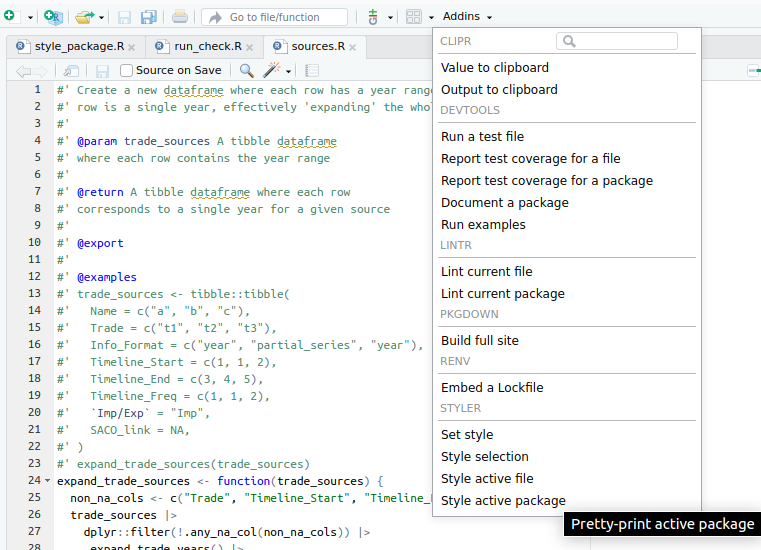
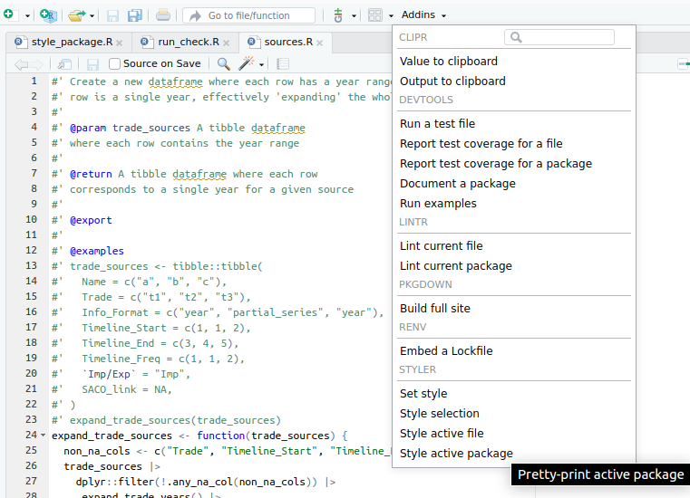

[1] "this is code change"
There are some conventions and good practices for how to write neat code in R. The most followed style guide is the Tidyverse style guide. You can read it or just skim through it to get a grasp of their conventions. The key is that most of them can be checked automatically. There are tools which conform to these standards and let you apply the necessary changes to the code by just clicking one button. Analogously, there are also ways to check whether a code is correctly following a style or not, without explicitly changing it. In the context of the Tidyverse style guide, these two points directly match with two R packages:
styler: it applies the Tidyverse style guide to a specific code, be it a chunk, a file or an entire project. For example, we could apply the style to the whole package by simply using the command:
styler::style_pkg()Most code editors incorporate some way of doing this. Since you are most likely using RStudio, you can do it by finding the styler options in the ‘addins’ drop-down:
[1] "this is code change"
When using renv, it seems RStudio only shows in the ‘addins’ drop-down the options from packages included in renv, so keep that in mind in case you want it in a different project, that is, if styler does not show up there, it means you do not have it installed in the current renv environment.
An important thing to keep in mind is that the Tidyverse style guide states lines should have at most 80 characters, but the styler package cannot by itself try to separate a really long single line into several lines to match the 80 character limit. You must fix this anyway, and the usual way for the styler to work is to first manually split some of the code into two lines, and then run the styler again, so it can now split the rest accordingly. For example, you have:
call_my_incredibly_long_function(my_first_long_argument, my_second_long_argument, my_third_long_argument)In this case, if you use styler it may not change anything and still leave this code in a single line, but you can help it a bit by sending the arguments to the next line, like this:
call_my_incredibly_long_function(
my_first_long_argument, my_second_long_argument, my_third_long_argument)This does not conform to the standard yet, but now trying to use styler again, it should be able to understand what is going on and split the code accordingly. Depending on the length of the line, it may leave it like this (note the closing parenthesis goes in its own line):
call_my_incredibly_long_function(
my_first_long_argument, my_second_long_argument, my_third_long_argument
)Or if the line was even longer, it would split each argument into its own line:
call_my_incredibly_long_function(
my_first_long_argument,
my_second_long_argument,
my_third_long_argument,
my_fourth_long_argument
)Any of those should work now, because they successfully follow the 80 character per line limit. If you do not follow the limit, you would fail the lintr check (see next point below).
lintr: it checks whether the given code/file/project follows the Tidyverse style guide, without making any actual changes. You are responsible for making sure this check passes (probably using styler as explained above), since it will also be automatically checked on your Pull Requests (see the next section on this guide). The check we will use is:
lintr::lint_package(
linters = lintr::linters_with_defaults(object_usage_linter = NULL)
)The default call would be as easy as lintr::lint_package(). I will not go into detail about the specific option added here, but it is there to ignore warnings about undeclared global variables, which are false positives when using dplyr column names. For convenience, if you are following our example repository, you could find this call in inst/scripts/check_lint.R, so if you want to check everything you would just have to run this script.
In the screenshot above you can see there are also options for lintr checks from Rstudio’s ‘addins’, but by default they perform the lintr::lint_package() call without any options. Remember we added one option to our check, so you should either find out how to change the default behavior or just run the script we included in inst/scripts/check_lint.R.
Again, as you can see in the screenshot, there are more things you can do directly from RStudio (like running tests or building documentation). In this guide I tried to provide a code editor agnostic approach for everything. Since I do not use RStudio myself, I am not particularly familiar with its functionalities, so if you think they may be helpful to you, you can check them yourself.